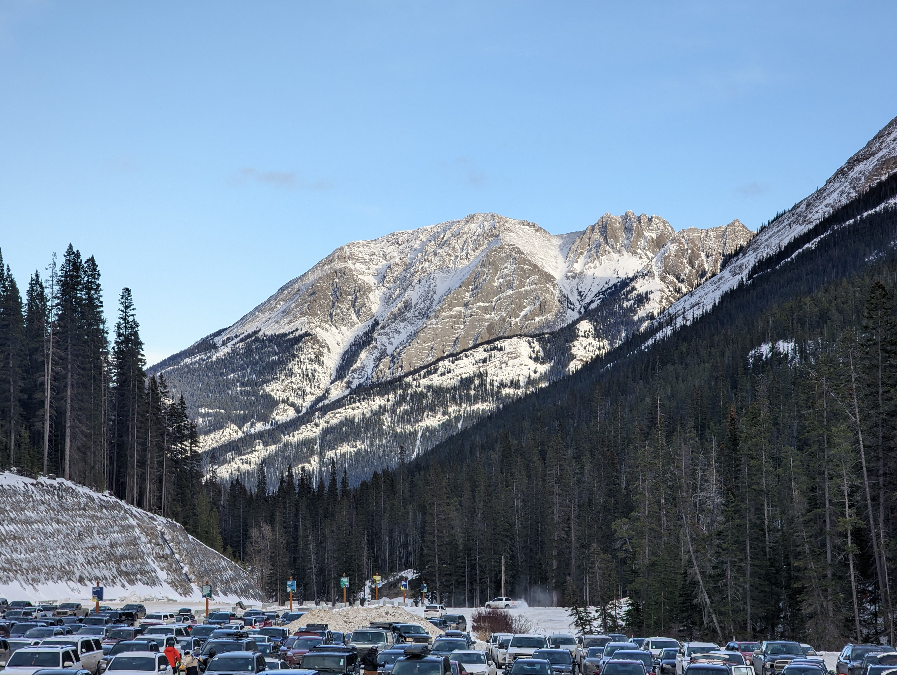
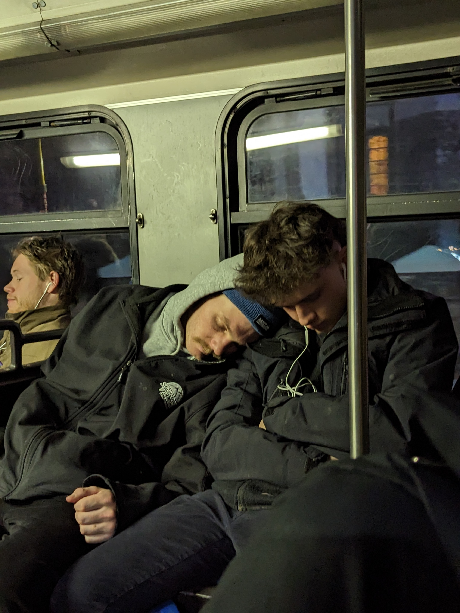

As Crew Foreman, I led teams of 2–8 crew members and subcontractors on residential and commercial projects ranging from $25k–$500k. I oversaw site coordination, scheduled and staged equipment, and acted as the primary point of contact with clients and project managers. My role emphasized problem-solving under pressure, training new hires on safety and machinery, and delivering high-quality builds on time and to specification.
Pines Landscaping | Lead Hand
Clarksburg, ON • Apr 2023–Mar 2024
In this role, I supported the foreman in daily operations and jobsite coordination while taking ownership of technical builds. I operated heavy machinery for grading, trenching, and foundational prep, and executed precise work in stone masonry, concrete, fencing, and turf installation. I became relied upon for hands-on expertise and consistent quality in high-paced construction settings.
Sunshine Village | Rental Associate
Banff, AB • Nov 2022–Mar 2023
At Sunshine Village, I assisted more than 200 guests per day in selecting, fitting, and troubleshooting ski and snowboard equipment. I provided efficient, guest-focused service in a fast-moving environment while leveraging my skiing expertise to recommend premium rental packages. This role strengthened my ability to balance technical product knowledge with personable customer interactions.

Office View

Morning CommuteBoot Race
Pines Landscaping | Landscape Technician
Clarksburg, ON • Jan–Oct 2022
As a Landscape Technician, I quickly adapted to demanding 10–14 hour shifts, mastering tools, machinery, and processes in a fast-paced environment. I became a go-to team member for preparation, set-out, and finishing tasks, showing initiative and reliability while contributing to the successful delivery of high-quality projects.
JW Marriott | Groundskeeping Staff
Minett, ON • May–Aug 2021
While working at the JW Marriott Resort & Spa, I was responsible for maintaining the hotel and spa grounds, including gardens, pathways, and building exteriors. I collaborated on weekly schedules to ensure the property’s presentation met luxury standards, developing strong organizational skills and attention to detail in a high-visibility setting.
Before WeedingAfter WeedingZoning Plan
Beaver Valley Ski Club | Certified Ski Coach
Markdale, ON • Dec 2017–Mar 2020
As a Certified Ski Coach, I instructed groups of up to 24 freestyle skiers aged 9–15, creating lesson plans tailored to skill progression. I mentored volunteer instructors, communicated regularly with parents, and provided end-of-season evaluations. This role honed my leadership, safety training, and teaching skills while fostering growth and confidence in young athletes.